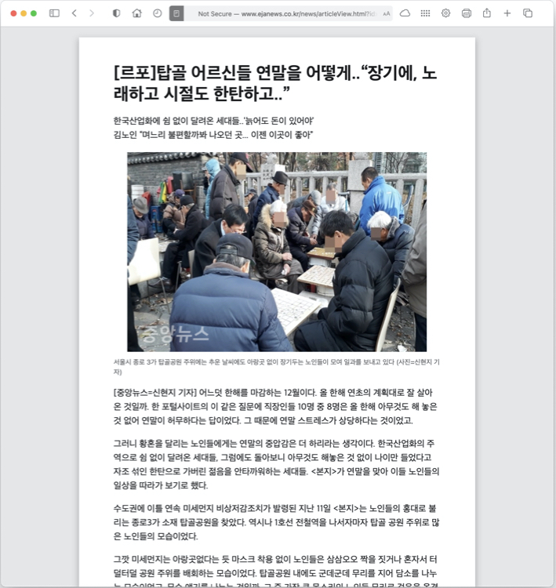
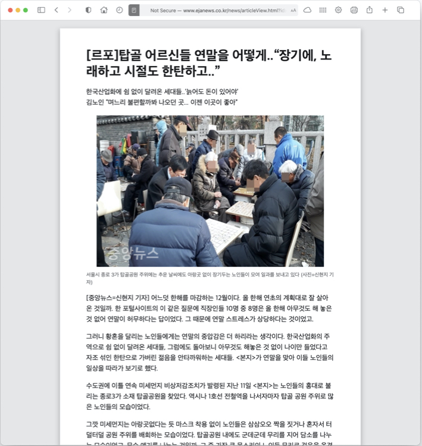

현재 한국은 초고령화사회로 진입하고 있습니다. 게다가 1인가구가 맞물려 증가하고 있어 점점 독거노인가구가 늘어날것으로 예상되고 있습니다. 하지만 지금, 노인층을 타겟으로 한 서비스는 충분치않고, 나날이 발전하는 디지털사회에서 소외되어 가고 있습니다. 기존에는 대부분 탑골공원이나 경로당, 복지관같은 곳을 방문하여 그나마 대면서비스를 이용할 수 있었던 상황이었으나 코로나19로 인해 이런 오프라인 공간들이 폐쇄되고 집에서 나가지 못하는 상황에 처하게 되었다는 것을 확인할 수 있습니다.
실제로 사태가 심각했던 2월 경북에서만 5000개 이상의 경로당이 폐쇄되었고, 대부분이 문을 다시 열지못하는 상황입니다. 다시 문을 연다고 하더라도 감염병 유행의 추이에 따라 언제든지 다시 폐쇄될 수 있는 상황에 처해있습니다.
 
